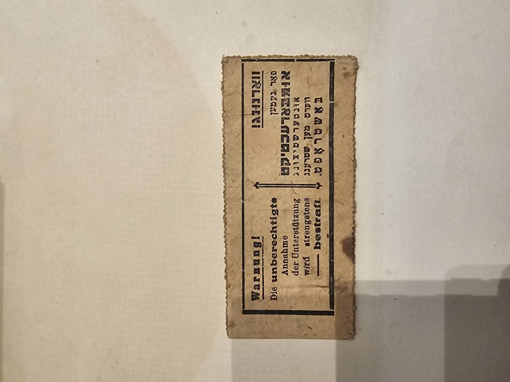
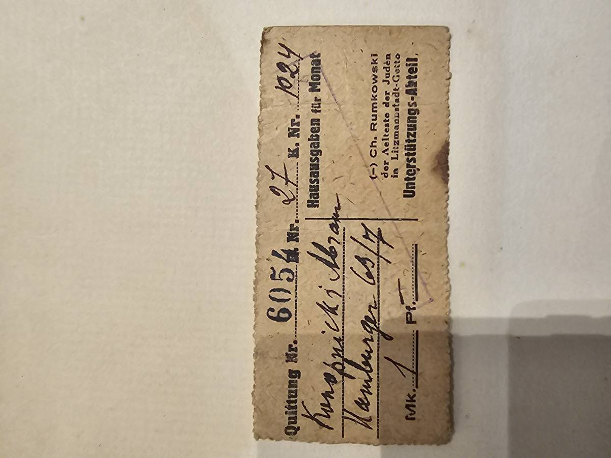
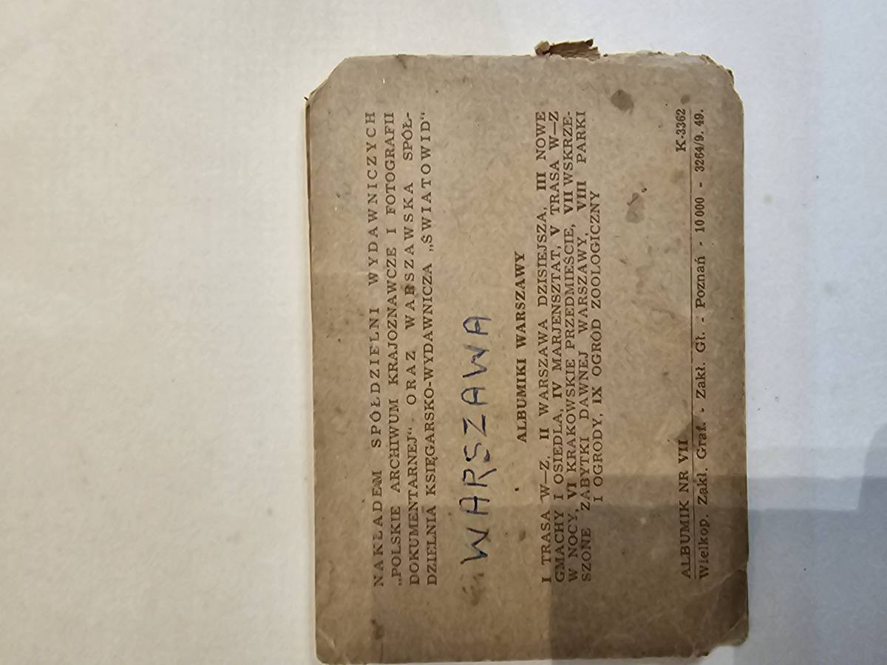
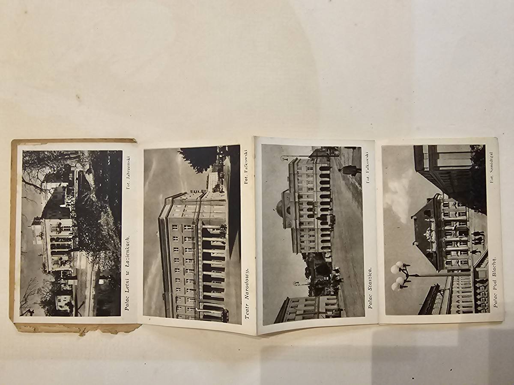
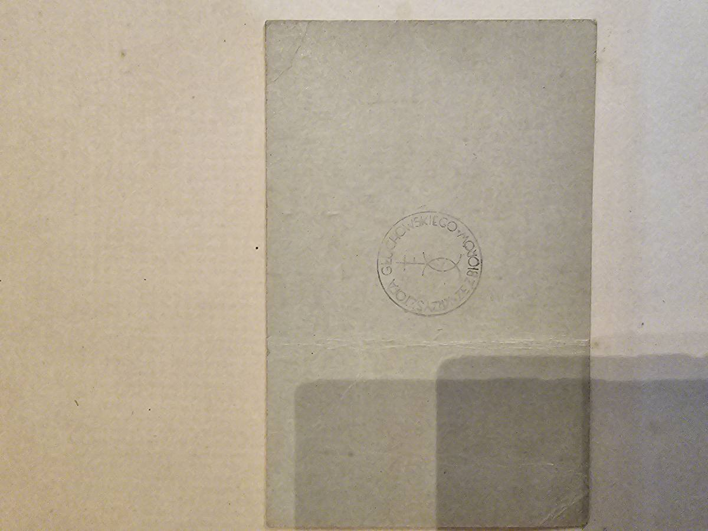
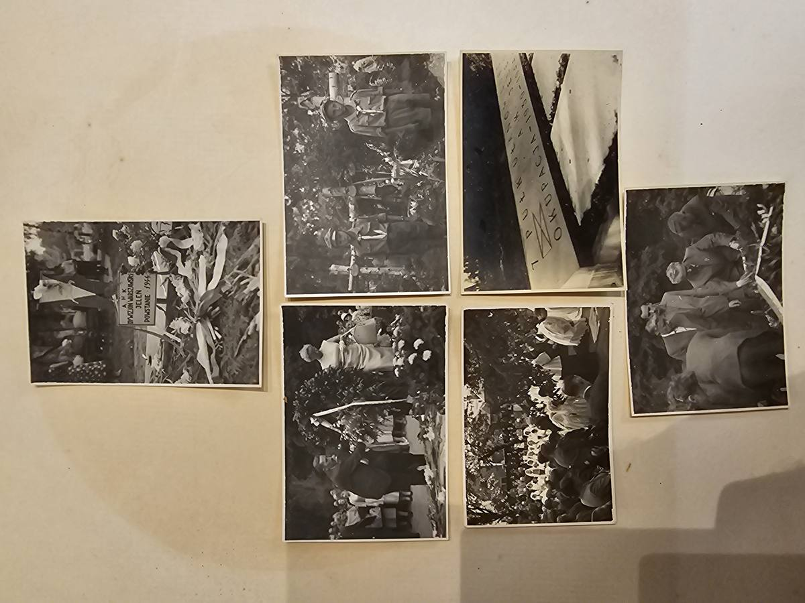
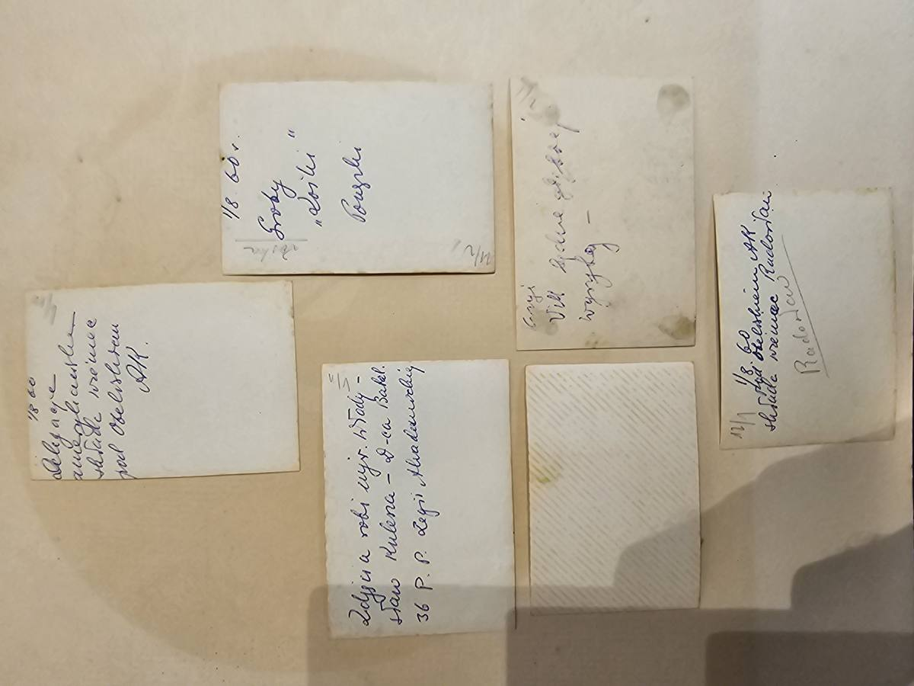

")
GALERIA FOTOGRAFICZNA

Gen. dyw. Janusz Julian Głuchowski (1888–1964)
Siódemka Beliny (2.VIII.1914), twórca i d-ca 7 P.Uł. Lubelskich, gen. bryg. (1927), gen. dyw. (1.VI.1945), I Zastępca Ministra Spraw Wojskowych (1935-1939), Dowódca PSZ w Wielkiej Brytanii (1943-1945). OB PPS od 1905 (17 lat!), ZWC w Liège (współzałożyciel z T. Piskorem), Legiony, wojna 1920, MSWojsk, emigracja w Londynie, współzałożyciel Instytutu Piłsudskiego w Londynie (15.III.1947). Pochowany Brompton Cemetery (#576).

Fotokopia 'Siódemki Beliny' z podpisami uczestników

Fotografia z Beliną — Plac Strzelecki, Kraków, ok. 1913

Dyplom Krzyża Legionowego Nr 145 — widok pełny z portretem Piłsudskiego obok

Fotokopia prasowa — Śmigły-Rydz wręcza sztandar 17 P.Uł.

Portret gen. Janusza Głuchowskiego w mundurze galowym

Zestaw fotograficzny — Mauzoleum Woli, Pole Mokotowskie, Al. Szucha — podróż pamięci gen. Głuchowskiego

Fotografia — gen. Głuchowski wręcza odznaczenia żołnierzom, Szkocja 1941

Fotografia — gen. Głuchowski wśród oficerów polskich, Podchorążówka, Szkocja

Zestaw fotograficzny — restauracja grobu powstańczego, Jele, AK 1944

Album pamięci PLUTONU 1112 — groby powstańców AK, wizyta 14.VIII.1960

Fotografia — gen. Głuchowski podczas inspekcji oddziału polskich oficerów na emigracji

Gen. Głuchowski z brytyjskim Lord Provostem i polskim dygnitarzem — Szkocja

Fotografia — Zjazd Harcerzy w Dundee (Szkocja), 6 marca 1945. Fot. Wł. Przytyś

Fotografia — Zjazd Harcerzy w Dundee (Szkocja), 6 marca 1945 — zdjęcie grupowe. Fot. Wł. Przytyś

Fotografia portretowa — mężczyzna w ubraniu cywilnym na tle szkockiej architektury (identyfikowany jako Kazimierz Gedymin Jurgielewicz, 1891–1956)

Fotografia dedykacyjna z Freuchie (Szkocja) — uczniowie Kursu Unitarnego dla gen. bryg. Głuchowskiego Janusza, Dowódcy Brygady Szkolnej, 23.V.1942

Fotografia — inspekcja polskich czołgistów w szkoleniu, Szkocja, lata 40.

Fotografia — inspekcja wojskowa w Kelso (Szkocja), gen. Bór-Komorowski, Głuchowski i Mazur, 15 VI 1945

Fotografia — gen. Bór-Komorowski inspekuje polskie czołgi, parada 3. Pułku Pancernego, 15 VI 1945

Fotografia — orkiestra dudziarska L. Sprusińskiego, batalion 4. Dywizji Piechoty, Szkocja, 1945

Zestaw 5 fotografii gen. Głuchowskiego — Zjazd Kawalerzystów IV.1941, powitanie gen. Broniewskiego 1945, British Linen Bank, portret. Szkocja

Zestaw 4 fotografii — Holandia 1945, sceny z obozu polskich żołnierzy po uwolnieniu + inspekcja w Szkocji. Pieczęć Wojskowej Sekcji Fotograficznej

Fotografia — Święto Łączności, obóz pod Kinross (Szkocja), 1945. Żołnierze-motocykliści łączności w szyku

Album fotograficzny — zbiórki wojskowe 1921 i dedykacja dla gen. Głuchowskiego (8.III.1944)

Album — zdjęcia wojskowe z podpisami, manewry i ceremonie

Album gen. Głuchowskiego — strona ze zdjęciami wojskowymi (4 fotografie grupowe)

Portret rodzinny Głuchowskich — zdjęcie studyjne, ok. 1916–1920
St.ul. Krzysztof Andrzej Głuchowski ps. 'Juraś' (29.XI.1926 – V.2020)
Ur. 29.XI.1926, Warszawa. Przysięga AK 11.V.1942 (15 lat!). Pluton 1112, 7 P.Uł. AK, dywizjon 'Jeleń'. Obrona Fabryki Kamlera (KG AK), Starówka, ewakuacja kanałami 1.IX.1944, Śródmieście. Jeniec Stalag XI-B Fallingbostel (nr 141009) — ten sam obóz co ojciec! Via Holandia/Belgia/Francja do Włoch, 2 Korpus, Gimnazjum 3 DSK (matura 1946). Emigracja: Anglia → Brazylia (od 1974). Chartered Engineer, publicysta, wydawca bibliofilski. Zm. V.2020, Rio de Janeiro.

Fotografia proporca/sztandaru 7 Pułku Ułanów Lubelskich — ZAGINIONEGO W POWSTANIU WARSZAWSKIM
Varia / Rodzina
Dokumenty niemożliwe do jednoznacznego przypisania, album fotograficzny, militaria, biogramy rodzinne.

Album fotograficzny — dedykacja od Kompanii Dowodzenia CENTRUM ŁĄCZNOŚCI dla gen. Głuchowskiego, 8.III.1944

Album Centrum Łączności — strona z 4 zdjęciami: izba, szkolenie, formacja Kompanii Dowodzenia

Album Centrum Łączności — strona z 3 zdjęciami: żołnierze z gitarą, sport, życie koszarowe

Trzy fotografie obozowe

Zbiór starych fotografii z odręcznymi podpisami — sceny plenerowe

Strona albumu — 3 zdjęcia grobów/pomników z karteczkami opisowymi
Uzupełnienie III — Londyn, Warszawa, Barcelona (1949–1972)
8 nowych obiektów: dokumenty emigracyjne, fotografie, grafika
8 obiektów

Fotografia — Stefan Głuchowski na polowaniu

Quittung Nr. 6054 — awers / ostrzeżenie Quittung No. 6054 — obverse / warning Quittung N.º 6054 — anverso / advertência Quittung Nr. 6054 — Vorderseite / Warnung Quittung Nr. 6054 — voorzijde / waarschuwing Quittung Nº 6054 — avers / avertissement קוויטונג נר. 6054 — פֿאָדערזײַט / וואָרענונג

Quittung Nr. 6054 — rewers / pokwitowanie Abrama Knopnickiego Quittung No. 6054 — reverse / receipt for Abram Knopnicki Quittung N.º 6054 — reverso / recibo de Abram Knopnicki Quittung Nr. 6054 — Rückseite / Quittung für Abram Knopnicki Quittung Nr. 6054 — achterzijde / ontvangstbewijs voor Abram Knopnicki Quittung Nº 6054 — revers / reçu pour Abram Knopnicki קוויטונג נר. 6054 — הינטערזײַט / קבלה פֿאַר אַבֿרם קנאָפּניצקי

Albumik «Wskrzeszone Zabytki Dawnej Warszawy»

Albumik «Wskrzeszone Zabytki» — tylna okładka ‘Resurrected Monuments’ booklet — back cover Livreto «Monumentos Ressuscitados» — contracapa Heft «Auferstandene Denkmäler» — Rückseite Boekje «Herrezen Monumenten» — achteromslag Livret «Monuments Ressuscités» — quatrième de couverture ביכל „אויפֿגעשטאַנענע דענקמעלער“ — הינטערע אומשלאָג

Albumik «Wskrzeszone Zabytki» — wnętrze ‘Resurrected Monuments’ booklet — interior Livreto «Monumentos Ressuscitados» — interior Heft «Auferstandene Denkmäler» — Innenseiten Boekje «Herrezen Monumenten» — binnenzijde Livret «Monuments Ressuscités» — intérieur ביכל „אויפֿגעשטאַנענע דענקמעלער“ — אינעווייניק

Akwaforta «Łazienki» — B. Łada

Skarb Narodowy — legitymacja Nr 001704 + wkładka na Danutę Głuchowską, Londyn 1953

Skarb Narodowy — wkładka Nr 5086 na Krzysztofa Głuchowskiego, Londyn 1952

Membership Card — Association of Friends of Polish Patients in Mental Hospitals, Nr 358

Karta Association — rewers z pieczęcią ichthys Association card — reverse with ichthys stamp Cartão da Association — reverso com carimbo ichthys Association-Karte — Rückseite mit Ichthys-Stempel Association-kaart — achterzijde met ichthys-stempel Carte Association — revers avec tampon ichthys אַסאָסיאַציע קאַרטל — הינטערזײַט מיט איכטיס שטעמפּל

Zaświadczenie EADA Barcelona — Krzysztof Andrzej Głuchowski, kurs nr 1311 Marketing

Fotografia grupowa — wizyta bpa Władysława Rubina w Beckenham, 1963

Mjr Jeleń i płk Radosław — 6 fotografii, awersy Maj. Jeleń and Col. Radosław — 6 photographs, obverses Maj. Jeleń e Cel. Radosław — 6 fotografias, anversos Mjr. Jeleń und Oberst Radosław — 6 Fotografien, Vorderseiten Maj. Jeleń en Kol. Radosław — 6 foto's, voorzijden Cmdt Jeleń et Col. Radosław — 6 photographies, avers מיאָר יעלען און אָבערשטער ראַדאָסוואַוו — 6 פֿאָטאָגראַפֿיעס, פֿאָדערזײַטן

Mjr Jeleń i płk Radosław — rewersy z dedykacjami Maj. Jeleń and Col. Radosław — reverses with dedications Maj. Jeleń e Cel. Radosław — reversos com dedicatórias Mjr. Jeleń und Oberst Radosław — Rückseiten mit Widmungen Maj. Jeleń en Kol. Radosław — achterzijden met opdrachten Cmdt Jeleń et Col. Radosław — revers avec dédicaces מיאָר יעלען און אָבערשטער ראַדאָסוואַוו — הינטערזײַטן מיט הקדשות
I. Legiony i II Rzeczpospolita (1914–1939)
Od Siódemki Beliny przez wojnę 1920, Grudziądz, po pogrzeb Piłsudskiego
8 fotografii

Fotografia — promocja w Szkole Podchorążych Kawalerii, Grudziądz, 15.X.1937

Fotografia — ceremonia sztandarowa, Polska międzywojenna

Fotografia — samochód oficjalny z godłem RP i chorągiewką, WSF N°9881
Fotografia — oficerowie w mundurach II RP przed budynkiem miejskim

Fotografia — defilada kawalerii z lancami, pogrzeb Marszałka Piłsudskiego, Pole Mokotowskie, 17.V.1935

Reprodukcja portretu Marszałka Piłsudskiego — «NAŚLADOWANIE WZBRONIONE»

Pocztówka patriotyczna — Marszałek Piłsudski z córkami Wandą i Jadwigą

Fotografia — Stefan Głuchowski na polowaniu, jedyna znana fotografia ojca Krzysztofa
II. Internowanie w Rumunii (1939–1940)
Băile Herculane — od wakacji (1926) do internowania (1939)
3 fotografii

Fotografia — internowani polscy oficerowie w Băile Herculane, Rumunia, jesień 1939
Fotografia — internowani w Băile Herculane, drugie ujęcie, 1939

Fotografia portretowa — rtm. Tadeusz Łoś, adiutant gen. Głuchowskiego, 1940
III. Palestyna — Latrun (1941)
Ostatni koń kawalerii — dedykacja z obozu w Latrun
1 fotografii

Fotografia z dedykacją — oficer na koniu, obóz Latrun, Palestyna Mandatowa, 1941
V. Szkocja — dowodzenie (1941–1945)
Szkoła Podchorążych, pociągi pancerne, 10. Brygada Kawalerii
9 fotografii

Fotografia — Gen. Klimecki, gen. Sikorski i gen. Głuchowski — Szkoła Podchorążych, Szkocja 1941

Fotografia — Generał na trybunie — prawdopodobnie gen. Sikorski, Szkocja 1941

Fotografia — Głuchowski w Szkole Podchorążych — Szkocja

Fotografia — Inspekcja Głuchowskiego na placu — ze stemplem proweniencyjnym

Fotografia — Trzy odbitki inspekcyjne — Głuchowski przy samochodzie

Fotografia — Oficerowie 10. Brygady Kawalerii w Galashiels — maj 1942

Fotografia — Czołg Cromwell/Centaur — inspekcja formacji pancernej

Fotografia — Inspekcja w pociągach pancernych — czerwiec 1941

Fotografia — Polski pociąg pancerny na stacji — Szkocja
VI. Szkocja — najwyższe władze RP
Sikorski, Anders, Bór-Komorowski, Raczkiewicz, Arciszewski, Kopański, Sabbat
29 fotografii

Fotografia — Szwadron honorowy 3. Pułku Pancernego — inspekcja Naczelnego Wodza, Kelso

Fotografia — Bór-Komorowski przy radiostacji polowej na jeepie Willys MB — Kelso

Fotografia — Naczelny Wódz na trybunie honorowej z Orłem Białym — Kelso

Fotografia — Gen. Thorn i gen. Anders — uścisk dłoni, odbitka WSF N°9840

Fotografia — Inspekcja polowa — prezydent Raczkiewicz w Highlands

Fotografia — Prezydent Raczkiewicz z Gwiazdą Orderu — szpaler oficerów

Fotografia — Raczkiewicz z oficerami — inspekcja polowa

Fotografia — Prezydent Raczkiewicz przyjmuje Lord Provost Edynburga — zdjęcie grupowe

Fotografia — Lord Provost Edynburga z łańcuchem urzędowym — bliższe ujęcie

Fotografia — Gen. Głuchowski i gen. Kopański przed defiladą — Kinross 1945

Fotografia — Inspekcja Bóra-Komorowskiego w Kelso — żołnierze przy czołgu, WSF N°4519

Fotografia — Prezydent Raczkiewicz i oficerowie — Dundee

Fotografia — Zjazd Klanowy — gen. Głuchowski i ppor. Kazimierz Sabbat (przyszły Prezydent RP), Dundee 6.III.1945

Fotografia — Prezydent Raczkiewicz, Lord Provost i Głuchowski — portret oficjalny

Fotografia — Oficerowie z cywilami — spotkanie protokolarne

Fotografia — Zdjęcie grupowe — delegacja polska i szkocka

Fotografia — Prezydent Raczkiewicz na polowaniu — Szkocja 1943

Fotografia — Raczkiewicz wizytuje obóz — baraki i ciężarówki

Fotografia — Raczkiewicz wizytuje żołnierzy — spotkanie nieformalne

Fotografia — Raczkiewicz w Perth — spotkanie z kobietami

Fotografia — Premier Tomasz Arciszewski z gen. Głuchowskim — wizyta u inwalidów

Fotografia — Premier Arciszewski — wyjście z budynku

Fotografia — Święto Łączności — publiczność szkocka, Kinross 1945

Fotografia — Portret cywilny — format 6×6, Głuchowski (?)
Fotografia — North Berwick 12.IX.1944 — Raczkiewicz w obozie PSK, dedykacja Niekraszowej
Fotografia — Odznaczenia dla Czechosłowaków — gen. Karel Janoušek, lipiec 1941
Fotografia — Prezydent Raczkiewicz na polowaniu — Highlands 1943
Fotografia — Gen. Głuchowski ściska dłoń fotografowi Prytysowi — portret z aparatem
Fotografia — Zjazd Klanowy — 80 oficerów na ulicy Dundee, 6.III.1945 (fot. Prytys)
VII. Szkocja — uroczystości wojskowe
Seria Forfar WSF, Wigilia, Zjazdy, Święto Łączności, defilady
21 fotografii

Fotografia — Zjazd Kawalerzystów — przemówienie z podium, marzec 1941

Fotografia — Zjazd Kawalerzystów — ‘ja otwieram’ — dramatyczne ujęcie

Fotografia — Oficerowie na brukowanym placu — ujęcie z góry, WSF N°8857

Fotografia — Wigilia wojskowa z dekoracjami — WSF N°8892

Fotografia — Procesja Bożego Ciała — Szkocja

Fotografia — Oficerowie na rynku Forfar — wieża zegarowa, WSF N°8850

Fotografia — Posiłek masowy żołnierzy — Forfar, WSF N°8855

Fotografia — Oficerowie i goście przy stołach — Forfar

Fotografia — Wręczenie odznaczeń — Brygada Szkolna, WSF N°8865

Fotografia — Formacja na ulicy — żołnierze w hełmach, WSF N°8868

Fotografia — Posiłek masowy — perspektywa wzdłuż stołu

Fotografia — Kapelan wojskowy z marynarzem PMW, WSF N°8876

Fotografia — Posiłek masowy — najbardziej czytelny stempel WSF, N°8878

Fotografia — Przemówienie oficera — posiłek Brygady Szkolnej

Fotografia — Zdjęcie grupowe — oficerowie i żołnierze na schodach

Fotografia — Podchorążówki — szyk kobiet w mundurach, Kinross

Fotografia — Oficerowie w szyku — ceremonia w Kinross

Fotografia — Oficerowie na schodach kamiennego budynku
Fotografia — Szkoccy dudziarze (pipers) — polsko-szkockie braterstwo broni

Fotografia — Ranny oficer na kulach salutuje — WSF N°5829

Fotografia — Uroczystość przy mogile AK Dywizjonu ‘Jeleń’ — płk Radosław składa wieniec, 1 VIII 1960
VIII. Szkocja — życie prywatne
Maria w tartanie, ogród, Reswallie House, podwieczorki
9 fotografii

Fotografia — spotkanie z kobietami PSK, wnętrze z kominkiem

Fotografia — ceremonia odznaczeniowa, Polska międzywojenna

Fotografia — rozmowa gen. Głuchowskiego z ambasadorem brytyjskim

Fotografia — kolacja z ambasadorem brytyjskim

Fotografia — procesja wojskowa z Orłem, Centrum Łączności

Fotografia — oficerowie przy stole ze sztandarami, spotkanie

Fotografia — oficerowie i kobieta na schodach, pocztówka, Reswallie House (?)

Fotografia — oficerowie przed kamiennym wejściem, bliższe ujęcie

Fotografia — oficer z dokumentami, portret
IX. Wyzwolenie — Holandia (IV.1945)
8 zdjęć WSF: od wyzwolenia po flagę. Niemowlę w ramionach matki.
8 fotografii

Fotografia — wyzwolenie obozu kobiet w Holandii, moment radości, WSF N°3989

Fotografia — wyzwolenie, formacja kobiet z flagą na maszcie

Fotografia — wyzwolenie, kobiety z obozu i oficerowie, radość

Fotografia — wyzwolenie, porucznik (raport komendantki obozu)

Fotografia — wyzwolenie, sceny z obozu nazajutrz, ciężarówka z numerem 52

Fotografia — wyzwolenie, obóz z barkami i Czerwonym Krzyżem

Fotografia — wyzwolenie, formacja żołnierzy przed barakami

Fotografia — wyzwolenie, podniesienie flagi (ujęcie z masztem)
X. Po wojnie — Londyn
Jedyny powojenny portret generała
2 fotografii

Fotografia — portret cywilny, Głuchowski po demobilizacji, Londyn, lata 50.